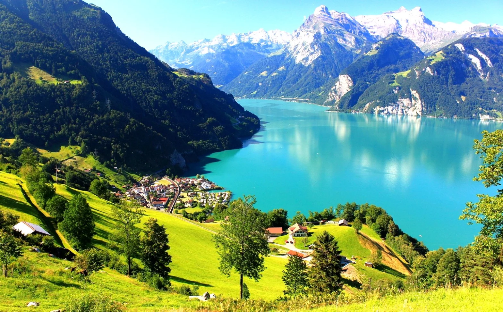
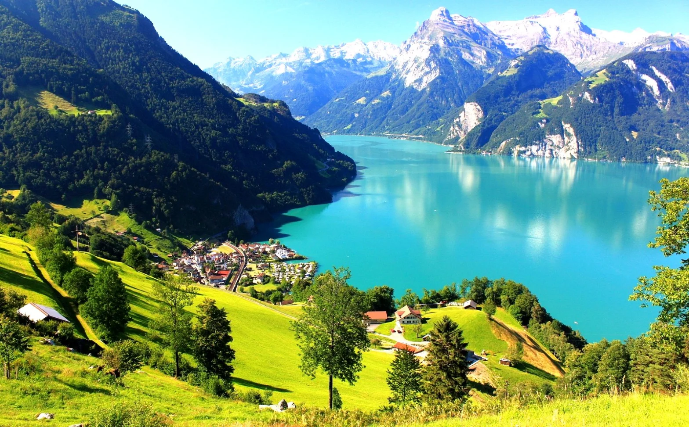

A Suíça tem uma história única na Europa. Formada inicialmente por uma aliança de três cantões em 1291 para resistir a domínios externos, o país evoluiu para uma confederação de estados com forte identidade local. Ao longo dos séculos, a Suíça ficou famosa por sua neutralidade em conflitos, inclusive nas duas Guerras Mundiais, o que a tornou um centro de diplomacia e paz. Hoje, além de chocolates e relógios, o país encanta com cidades charmosas como Zurique, Lucerna e Genebra, rodeadas por montanhas e lagos deslumbrantes.
Um país encantador bem no coração da Europa, rodeado por montanhas impressionantes, lagos cristalinos e vilarejos de contos de fadas. A capital é Berna, charmosa e tranquila, mas cidades como Zurique, Genebra e Lucerna também brilham com cultura, modernidade e cenários deslumbrantes. A Suíça tem cerca de 8,8 milhões de habitantes e uma área de aproximadamente 41 mil km². Dá pra atravessar o país rapidinho, mas com certeza você vai querer fazer isso devagar pra aproveitar cada vista. Os idiomas oficiais são o alemão, francês, italiano e romanche. A moeda é o franco suíço (CHF).
E o clima?
A Suíça tem um clima bem variado por causa das montanhas. Enquanto as regiões baixas têm estações bem definidas, nas áreas alpinas pode nevar até a primavera. No geral, é um clima temperado, com verões agradáveis e invernos frios.Alta Temporada (dezembro a março / julho a agosto): No inverno, a Suíça é o paraíso dos esportes na neve, com estações de esqui lotadas. No verão, os lagos e trilhas alpinas atraem turistas em busca de natureza e aventura, com temperaturas entre 20°C e 28°C.
Meia Temporada (abril-maio / setembro-outubro): É quando tudo está mais tranquilo. O clima é fresco, ideal para explorar cidades como Lucerna e Berna, ou fazer passeios de trem panorâmico pelos Alpes.
Baixa Temporada (novembro / março-abril):> Novembro e março são meses de transição, com menos turistas e temperaturas frias, mas ideais pra quem quer curtir paisagens tranquilas e preços mais baixos.
Pontos turísticos

Zermatt e o Matterhorn
Zermatt e o Matterhorn – A icônica montanha suíça, perfeita para esquiadores e fãs de trilhas.
Localização: Inchicore Road, Dublin.
Valor: Adultos €8; idosos €6; estudantes €4; crianças menores de 12 anos entram gratuitamente, mas precisam de ingresso.
Horário de Funcionamento:
Aberto durante todo o ano; recomenda-se verificar o site oficial para horários específicos.

Jungfraujoch
Conhecido como o “Topo da Europa”, com vistas impressionantes dos Alpes.
Localização: Condado de Antrim, Irlanda do Norte.
Valor: O acesso às formações é gratuito; o centro de visitantes oferece experiências adicionais por £15 a £17 para adultos.
Horário de Funcionamento:
O local está aberto ao público continuamente; o centro de visitantes tem horários específicos.

Lucerna
Uma cidade encantadora com pontes de madeira, muralhas medievais e lagos.
Localização: Inchicore Road, Dublin.
Valor: Adultos €8; idosos €6; estudantes €4; crianças menores de 12 anos entram gratuitamente, mas precisam de ingresso.
Horário de Funcionamento:
Aberto durante todo o ano; recomenda-se verificar o site oficial para horários específicos.

Interlaken
Ponto de partida para aventuras nos Alpes, como parapente e trilhas panorâmicas.
Localização: Condado de Antrim, Irlanda do Norte.
Valor: O acesso às formações é gratuito; o centro de visitantes oferece experiências adicionais por £15 a £17 para adultos.
Horário de Funcionamento:
O local está aberto ao público continuamente; o centro de visitantes tem horários específicos.
Gastronomia


A gastronomia irlandesa é marcada pela simplicidade dos ingredientes locais, preparados de forma caseira e com um toque especial de conforto. Batatas, carnes, repolho e pães rústicos formam a base de muitos pratos que, mais do que alimentar, aquecem o corpo e a alma. Entre os pratos mais tradicionais está o Irish Stew, um ensopado clássico preparado com carne de cordeiro, batatas, cenouras e cebolas — perfeito para os dias frios e chuvosos do país. Outra especialidade é o Boxty, uma espécie de panqueca feita com batata ralada e purê, crocante por fora e macia por dentro. Já o Colcannon combina purê de batatas com couve ou repolho e é servido com manteiga derretida, trazendo um sabor rústico e reconfortante. Em Dublin, é comum encontrar o Coddle, um cozido feito com salsichas, bacon, batatas e cebolas, muito popular entre os moradores locais. O café da manhã irlandês, conhecido como Full Irish Breakfast, é uma refeição robusta que inclui ovos, bacon, salsichas, feijão, tomate grelhado, cogumelos, pão e os famosos black e white puddings — embutidos feitos com aveia e, no caso do black pudding, sangue suíno. É uma verdadeira refeição para começar o dia com energia. Os pães também têm lugar de destaque, com o tradicional Soda Bread, preparado com bicarbonato de sódio em vez de fermento, sendo uma presença constante à mesa. Outra iguaria típica é o Barmbrack, um pão doce com frutas cristalizadas, consumido especialmente no Halloween, muitas vezes com pequenos objetos simbólicos escondidos na massa como parte de uma brincadeira folclórica. Para os amantes de sobremesas, a Irlanda oferece delícias como a torta de maçã (Apple Tart), servida com creme fresco ou sorvete, e o clássico Bread and Butter Pudding, feito com fatias de pão amanhecido, manteiga, ovos e leite — uma sobremesa simples, mas cheia de sabor. Nenhuma experiência gastronômica na Irlanda estaria completa sem um brinde. A famosa cerveja Guinness, um ícone nacional, está presente em quase todos os pubs, acompanhando bem qualquer refeição. E para aquecer nos dias mais frios, nada melhor do que um Irish Coffee — café quente misturado com uísque irlandês, açúcar e uma generosa camada de creme. A culinária irlandesa é uma expressão do estilo de vida local: simples, calorosa e cheia de história. Seja em um pub animado ou em uma aconchegante casa de campo, cada prato conta um pouco do que é viver e sentir a Irlanda de verdade.